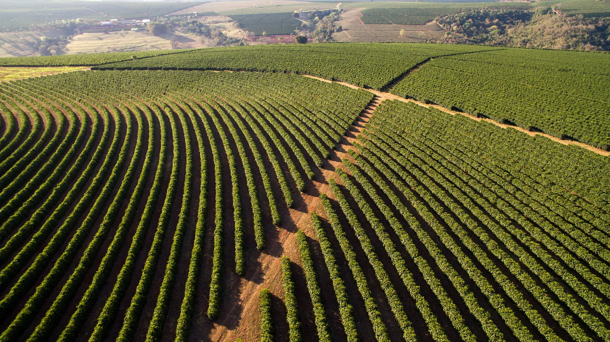

Welcome to Green Hills Coffee Plantation.
Coffee is a popular, stimulating beverage brewed from the roasted and ground seeds—known as beans—of tropical Coffea plants, primarily Arabica and Robusta. Originating in the highlands of Ethiopia and the Arabian Peninsula, it has grown into a global daily ritual cherished for its rich aroma, comforting warmth, and natural caffeine boost.

Coffee Varieties
- Arabica
- Robusta
- Batian
- Ruiru 11
Coffee Production Stages
- Planting
- Harvesting
- Processing
- Roasting
- Packaging
Coffee Plantation Activities
- Pruning
- Trimming coffee plants to remove damaged branches and encourage healthy growth.
- Harvesting
- Picking ripe coffee cherries from the plants.
- Drying
- Reducing moisture in processed coffee beans so they can be stored safely.
Contact Green Hills Coffee Plantation
Feel free to contact us through our cell:
Phone: 0151455848